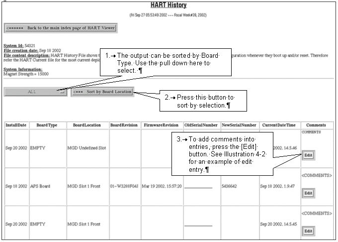
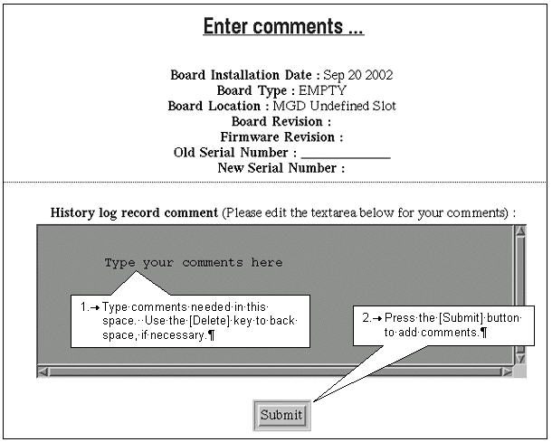

During troubleshooting, it will detect a change from its previous configuration.
Where there have been intermittent errors and board replacements, it will help remind or inform other site FE’s who might be troubleshooting the system.
It will assist the On-Line Center or on-site engineers in remotely detecting changes.
Pro-Diags can retrieve history files and flag high-failure-rate board information and provide feedback to Engineering.
See Illustration 4 for an example of History Log output.
Illustration 4: Example History Log Output

Illustration 5: Comment Entry Form
